Metal Hydride Hydrogen Storage Reactor for Low Temperature Fuel Cell Cold Start
Multiphysics reactor optimization combining transient pressure and temperature simulation, hydrogen storage materials, nickel foam integration, porosity studies, inlet-position analysis, reactor assembly and laboratory testing.
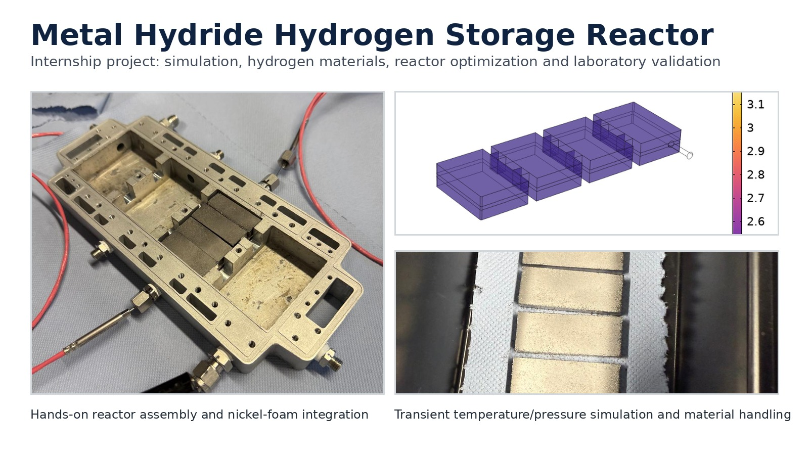
Engineering Problem
The project addressed limitations observed in a metal-hydride reactor concept: poor heat transfer, low permeability, metal-hydride expansion and hydrogen leakage. The reactor was investigated as a thermal booster for the cold start of low-temperature fuel-cell systems.
Poor heat transfer
Hydrogen absorption releases heat, so thermal transport directly affects hydriding performance.
Low permeability
Restricted gas transport can produce non-uniform hydrogen distribution between reactor regions.
Material expansion
Hydride formation changes the packed-bed state and must be considered in reactor integration.
Gas distribution
Pressure gradients and inlet position influence how quickly different chambers are supplied.
Multiphysics Simulation
Transient simulations were used to compare pressure and temperature development in the four-chamber reactor and to evaluate the effect of nickel foam and gas-distribution changes.
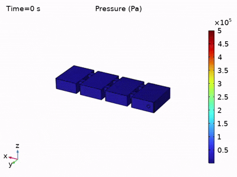
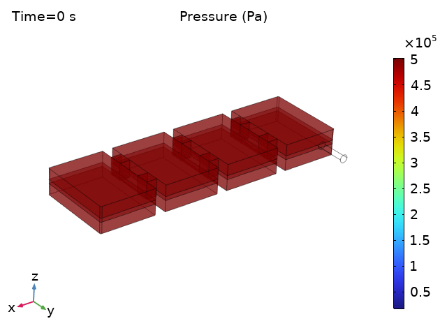
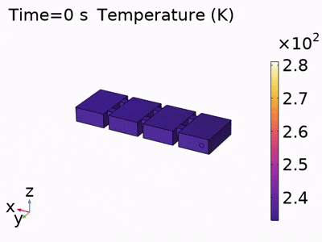
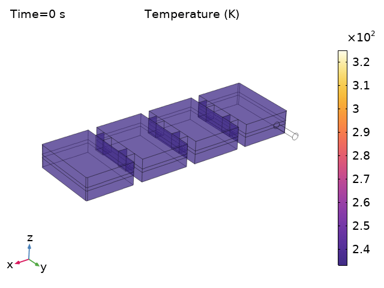
Hydrogen Materials and Reactor Optimization
The materials work focused on the interaction between hydrogen-storage behavior, porous structure and reactor heat/mass transfer. Nickel foam was evaluated as a structural and thermal enhancement concept.
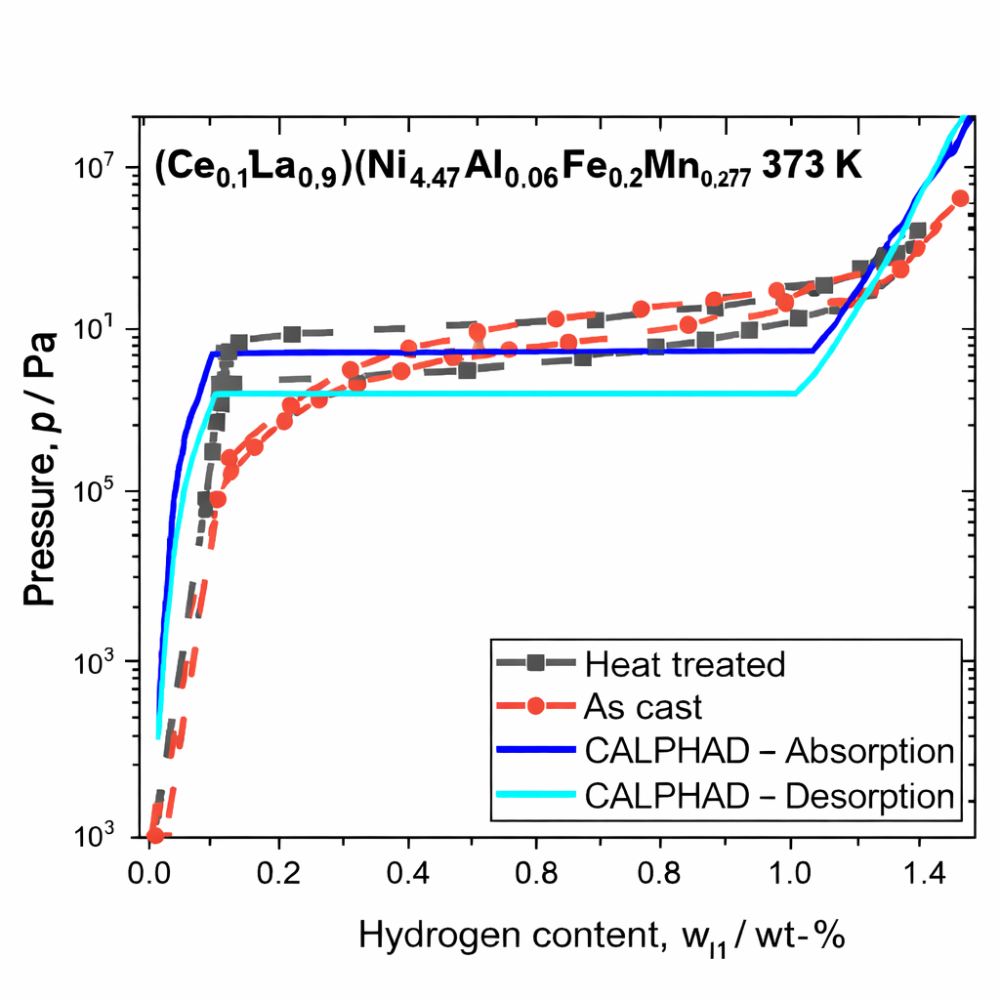
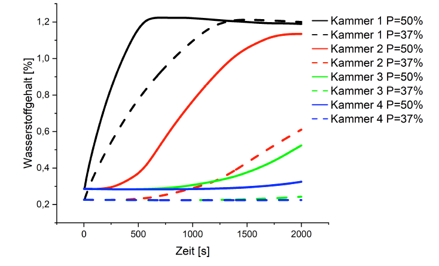
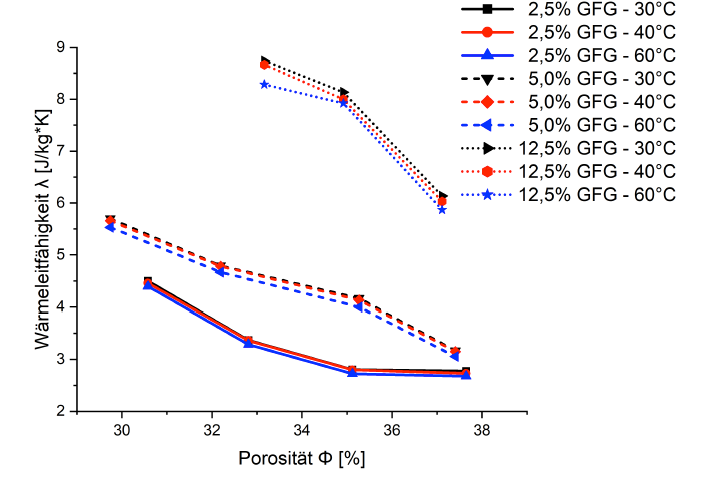
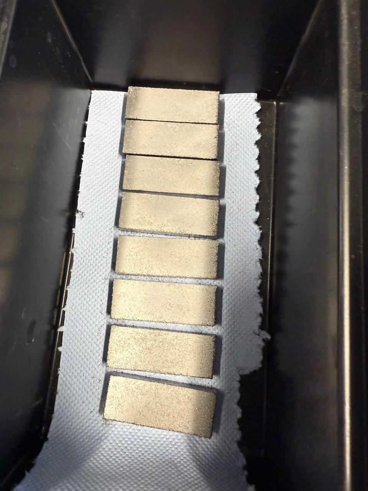
Hands-on Laboratory Work
The experimental work included reactor preparation, integration of porous material inserts, assembly of the chambered reactor, gas-line/test-rig work and monitoring of laboratory measurements. This complements the numerical work with physical reactor and materials experience.
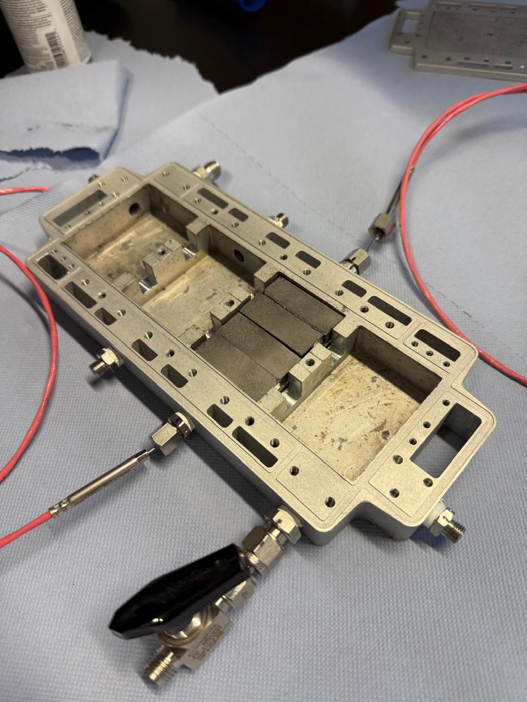
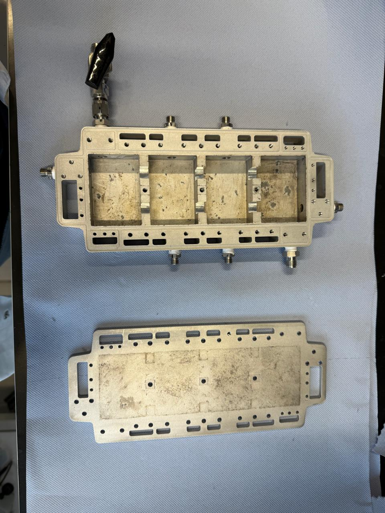
Engineering Outcomes
Nickel foam integration
Used as an optimization route for enhanced heat transfer, expansion accommodation and improved gas distribution.
Porosity optimization
Evaluated the tradeoff between permeability, hydrogen uptake behavior and thermal transport.
Inlet-position study
Investigated gas-supply configuration as a way to reduce pressure non-uniformity across the chambered reactor.
Simulation to experiment
Connected numerical pressure/temperature behavior with physical reactor design and laboratory testing.
The internship project showed how hydrogen-storage material properties, porous structure and reactor geometry interact. The optimization strategy focused on improved thermal uniformity, controlled pressure gradients and faster hydriding behavior for fuel-cell cold-start support.